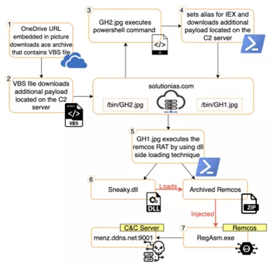

The attacks used in this example are:
Remcos RAT
Dridex
Remcos is a remote access software used to remotely control computers.
Once installed, it opens a backdoor on the computer granting full access to the remote user.
Below is a visual map of the steps involved in the attack:

Dridex is an evasive, information stealing malware.
It is used to acquire as many credentials as possible and return them as an encrypted tunnel to a command and control (C2) server.
C&C servers are numerous and scattered all over the internet. If the malware cannot reach one server, it will try another.
This is why network-based measures such as blocking C&C IP addresses are only effective in the short term.
Dridex uses an older tactic of infection by attaching a Word document that utilizes macros to install malware.
However, once Microsoft Office came out and users updated, this method became obsolete.
IBM X-Force discovered a new version of Dridex that takes advantage of a code injection technique call AtomBombing to infect systems.
AtomBombing is a technique for injecting malicious code into the atom tables that nearly all version of Windows uses to store certain application data.
It is a variant of typical code injection attacks that take advantage of input validation errors to insert and to execute malicious code in a legitimate process or application.